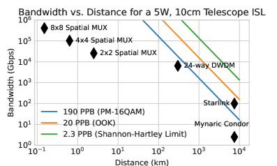

Łączność: optyczne ISL, downlink i latencja
Notatka raportu "Orbitalne centra danych". Kluczowe źródła: źródło 1, źródło 2.
W skrócie
Łączność to nerw orbitalnego centrum danych: bez sprawnego przesyłu danych między satelitami i do Ziemi cała koncepcja "serwerowni na orbicie" się rozpada. Dobra wiadomość dla inwestora jest taka, że szybkie lasery międzysatelitarne (ISL) już działają komercyjnie - Starlink ma ponad 13 000 łączy laserowych po 200 Gbps każde, a satelity V3 mają dawać 1 Tbps downlinku (SpaceX). Zła wiadomość jest taka, że downlink do Ziemi (zwłaszcza wysyłanie danych w górę, czyli uplink) pozostaje wąskim gardłem - asymetria sięga 10:1, a optyczne stacje naziemne padają pod chmurami (tłumienie >100 dB/km, arXiv). Kto zyskuje, a kto traci, zależy więc od typu obciążenia: zadania, które przetwarzają dane lokalnie i odsyłają tylko skompresowany wynik (obserwacja Ziemi, ISR, kompresja semantyczna redukująca objętość o 58,7-99,996%), są ekonomicznie sensowne; trening dużych modeli językowych (LLM), który wymaga ciągłego przesyłu ogromnych zbiorów, pozostaje praktycznie zablokowany przez fizykę łącza i tzw. "data gravity". Tempo zmian jest szybkie (roadmapa do 60 Tbps na jeden start Starship), ale niezależnych pomiarów SLA brak - wiele liczb to deklaracje producentów, nie zweryfikowane wyniki operacyjne.
Spółki powiązane
Notowane spółki produkujące podzespoły/technologie związane z tym tematem. Pełne omówienie: spółki, dla których nisza to >=33% przychodów; skrótowe: zdywersyfikowane konglomeraty. Zob. też Słownik i Spółki z ekspozycją na giełdy europejskie.
Producenci kluczowi (>=33% przychodów z niszy - omówienie pełne):
- Mynaric AG (MYNA) 🇪🇺 [archiwalna] - Pure-play terminale laserowe OISL (CONDOR) - WYCOFANA z giełdy, przejęta przez Rocket Lab (2026)
Pozostali dominujący gracze (nisza to ułamek przychodów - omówienie skrótowe):
- BAE Systems plc (BA) 🇪🇺 - Rad-hard procesory (RAD750/RAD5545); optyka (Ball)
- Airbus SE (AIR) 🇪🇺 - PV (Sparkwing), optyka (Tesat), busy, serwis (EU)
- L3Harris Technologies, Inc. (LHX) - Terminale laserowe dla obronności (SDA/NRO)
Powiązane wątki
Mapa powiązań tematycznych - jak ten wątek łączy się z resztą raportu.
- Wprowadzenie i architektury - OISL spina satelity w "jeden komputer" - sedno architektury
- Gracze i projekty - petabitowa siatka laserowa Starlink jako backbone ODC SpaceX
- Weryfikacja tez sceptyka - obala tezy o Starlink i o downlink bottleneck (kompresja semantyczna)
- Regulacje i debris - pasma RF i koordynacja częstotliwości to domena ITU
- Bezpieczeństwo i geopolityka - jamming, spoofing i cyber to ryzyka warstwy łączności
Optyczne łącza międzysatelitarne (laser ISL) i roadmapy Tbps
Optyczne łącze międzysatelitarne (ISL, Optical Inter-Satellite Link) to wiązka lasera łącząca dwa satelity w przestrzeni - zastępuje radio i pozwala przesyłać dane "po niebie" zamiast przez stacje naziemne. 🔵 Każdy satelita Starlink ma trzy lasery ISL pracujące z prędkością do 200 Gbps (gigabitów na sekundę), a w całej konstelacji jest ich ponad 13 000, co tworzy globalną "petabitową siatkę laserową" (SpaceX). Liczbę ISL na satelicie niezależnie potwierdza literatura: 🔵 każdy satelita Starlink ma 3-5 transceiverów ISL (arXiv), a 200 Gbps na łącze pojawia się w tym samym źródle (arXiv). Implikacja dla inwestora: backbone laserowy już istnieje w skali komercyjnej, więc ryzyko "czy to w ogóle działa" jest niskie - lasery ISL są dziś faktem, nie obietnicą.

Rys. 36 - Optyczne lacza miedzysatelitarne (OISL) w konstelacji Suncatcher. Źródło: Google Research / arXiv 2511.19468, licencja: arXiv open access - do uzytku wlasnego.
#grafika #lacznosc-optyczne-isl-downlink-i-latencja #ISL #Suncatcher
Roadmapa przepustowości jest stroma. 🔵 Satelita V1.5 miał 24 Gbps, V2 Mini ma 96 Gbps (czterokrotny wzrost), a V3 ma dawać 1 Tbps (terabit, czyli 1000 Gbps) downlinku i 160 Gbps uplinku (SpaceX). 🔵 Łączny backhaul (przepustowość "do magistrali", RF plus laser) V3 to blisko 4 Tbps, a jeden start Starship z satelitami V3 ma dodawać 60 Tbps pojemności do sieci - ponad 20 razy więcej niż start V2 Mini na Falconie 9 (SpaceX). 🔵 Optymalizacja routingu laserowego zredukowała już opóźnienie w kluczowych rynkach (Afryka) o 20-30 ms (SpaceX). Implikacja: pojemność rośnie wykładniczo wraz z tempem startów Starship, co przekłada wartość konstelacji bezpośrednio na koszt i częstotliwość wynoszenia.
xychart-beta
title "Downlink na satelite Starlink (Gbps)"
x-axis ["V1.5", "V2 Mini", "V3"]
y-axis "Gbps" 0 --> 1000
bar [24, 96, 1000]
Rys. 37 - Roadmapa przepustowości downlinku na satelitę: od 24 Gbps (V1.5) przez 96 Gbps (V2 Mini) do 1000 Gbps (V3). Dane: SpaceX Starlink Progress Report 2024.
Konkurencja celuje niżej, co jest istotne dla wyceny przewagi SpaceX. 🟠 Amazon Project Kuiper utrzymał 100 Gbps na dystansie blisko 1000 km w testach trwających ponad godzinę (GeekWire) i planuje konstelację 3236 satelitów (GeekWire). 🔵 Telesat Lightspeed daje cztery łącza OISL po 10 Gbps na satelitę, ma około 200 satelitów Ka-band i łączną pojemność ~10 Tbps (Telesat). Standard wojskowy jest jeszcze skromniejszy: 🔵 amerykańska SDA (Space Development Agency) w Tranche 0 wymaga od OISL zaledwie 250 Mbps (próg) i 1 Gbps (cel) na zasięgu do 5000 km (SDA). 🔵 Maksymalny zasięg pojedynczego ISL Starlink to 5000 km, a przepustowość maleje z dystansem (arXiv). Implikacja: deklarowane 200 Gbps Starlink to o dwa-trzy rzędy wielkości więcej niż standard SDA i 20 razy więcej niż OISL Telesatu - przewaga technologiczna SpaceX jest realna, ale porównujemy deklaracje z różnych klas misji. 🔵 Moc elektryczna pojedynczego lasera ISL Starlink jest NIE UJAWNIONA; proxy: cały satelita V2 Mini Optimized waży ~575 kg (SpaceX).
xychart-beta
title "Przepustowosc na lacze ISL/OISL (Gbps)"
x-axis ["SDA cel", "Telesat", "Kuiper", "Starlink"]
y-axis "Gbps" 0 --> 200
bar [1, 10, 100, 200]
Rys. 38 - Deklarowana przepustowość pojedynczego łącza laserowego: SDA (cel) 1 Gbps, Telesat 10 Gbps, Kuiper 100 Gbps, Starlink 200 Gbps. Dane: SDA Transport SoW, Telesat Lightspeed, GeekWire, SpaceX.
Downlink do Ziemi: RF Ka/V band kontra optyczne stacje naziemne i wpływ chmur
Downlink to przesył danych z satelity na Ziemię; może iść falami radiowymi (RF) lub laserem optycznym. 🔵 Satelita V3 ma 1 Tbps downlinku RF i 160 Gbps uplinku (SpaceX), wobec 96 Gbps downlinku V2 Mini (SpaceX). FCC autoryzowała Starlink Gen2 do pracy w wielu pasmach: 🟠 Ku- i Ka-band dla łączy użytkownika oraz V-, E- i W-band dla bram naziemnych (SatNews), a regulator zatwierdził 7500 dodatkowych satelitów Gen2, podnosząc autoryzowaną konstelację do 15 000 (SatNews). Ka-band (~26-40 GHz) jest tu kluczowy: 🟠 według Euroconsult ma odpowiadać za 60% przepustowości satelitarnej do 2030 r. (HzBeat), ale 🟠 cierpi na tłumienie deszczowe rzędu 10-20 dB w silnych burzach (HzBeat). Implikacja: RF jest dojrzały i odporny na chmury, ale ograniczony pasmem; to bezpieczna, znana technologia downlinku.
Optyka daje dużo większe pasmo, ale ma piętę achillesową - pogodę. 🔵 NASA szacuje, że łącza optyczne dają 10-100 razy większą przepustowość niż systemy radiowe (NASA). Demonstratory potwierdzają potencjał: 🔵 NASA LCRD downlinkuje optycznie 1,2 Gbps (NASA), terminal ILLUMA-T na ISS osiągnął 1,2 Gbps w dół i 155 Mbps w górę (MIT), a rekord NASA TBIRD to 200 Gbps laserowego downlinku do odbiornika naziemnego (Engineering). Problem: 🔵 tłumienie optycznego łącza przez chmury może przekraczać 100 dB/km, co znacznie przewyższa margines łącza (arXiv), więc 🔵 zachmurzenie w linii wzroku można traktować jako powodujące awarię łącza (arXiv). Rozwiązaniem jest "site diversity" - sieć rozproszonych stacji, z których przynajmniej jedna jest bezchmurna: 🔵 11 europejskich stacji optycznych daje 99,67% dostępności, a 8 stacji międzykontynentalnych aż 99,971% (Semantic Scholar). Implikacja dla inwestora: optyczny downlink to nie tylko terminal w satelicie, lecz CAPEX na globalną sieć stacji w miejscach o czystym niebie - bez tego optyka zawodzi przy każdej chmurze. 🔵 Dokładna dostępność optycznego downlinku Starlink (space-to-ground laser) jest NIE UJAWNIONA; proxy: NASA LCRD używa site diversity (Hawaje + Kalifornia), a badania pokazują >99,97% przy 8 stacjach (SpaceX).
Latencja orbita-Ziemia kontra zastosowania: trening wsadowy vs inference real-time
Latencja (opóźnienie) to czas, jaki sygnał potrzebuje na pokonanie drogi tam i z powrotem. LEO (niska orbita) wygrywa z GEO (orbita geostacjonarna) o rząd wielkości. 🔵 Starlink osiągnął medianę 26 ms w 2024 r. (SpaceX); 🟠 FCC podaje 25-60 ms na lądzie, z odległymi obszarami sięgającymi 100 ms i więcej (New America). 🟠 Sam przelot user-satelita-gateway zajmuje zwykle poniżej 10 ms (Ookla), bo 🟠 satelity Starlink są na wysokości ~341 mil (Ookla). Dla porównania GEO jest dramatycznie wolniejsze: 🟠 Kacific zmierzył 599 ms na Filipinach (Ookla), a HughesNet 600-800 ms (Ookla). Latencja LEO jest też zależna od infrastruktury lokalnej: 🟠 w Kenii spadła z 289 ms do 53 ms po uruchomieniu lokalnego punktu obecności (PoP) (Ookla), a najgorszy zmierzony wynik to 282 ms na Wyspach Marshalla (Ookla). Punkt odniesienia z Ziemi: 🔵 światłowód ma fizyczne opóźnienie ~5 μs/km (arXiv), co daje 20-30 ms RTT transkontynentalnie w USA (arXiv) i 120-180 ms międzykontynentalnie (arXiv). Implikacja: LEO mieści się w wymaganiach większości interaktywnych aplikacji i jest porównywalne ze światłowodem międzykontynentalnym, ale nie nadaje się do systemów mikrosekundowych (np. HFT).
xychart-beta
title "Latencja LEO vs GEO (ms)"
x-axis ["Starlink LEO", "Kacific GEO", "HughesNet GEO"]
y-axis "ms" 0 --> 800
bar [26, 599, 700]
Rys. 39 - Mediana latencji LEO (Starlink 26 ms) kontra GEO (Kacific 599 ms, HughesNet 600-800 ms, tu 700 ms) - przewaga o rząd wielkości. Dane: SpaceX Starlink Progress Report 2024, Ookla 2025.
Tu pojawia się kluczowy podział obciążeń. Trening AI to "batch compute" tolerujący opóźnienia (liczy się przepustowość, nie czas reakcji), a inferencja real-time jest "latency-bound" (każdy milisekund się liczy). 🟠 Szafa z GPU H100/Blackwell do treningu pobiera 40-140 kW lub więcej, podczas gdy inferencja zwykle 10-30 kW na szafę (Digital Edge). 🟠 Do 2026 r. inferencja ma stanowić około 2/3 globalnego AI compute, wobec 1/3 w 2023 r. (Digital Edge). Implikacja: trening jest energochłonny, ale tolerancyjny na opóźnienia - teoretycznie pasuje do orbity od strony latencji; problemem jest nie czas, lecz przesył danych i moc. 🔵 Dokładny próg akceptowalności latencji dla orbitalnego treningu LLM jest NIE UJAWNIONY; proxy: trening to throughput-bound batch compute tolerujący opóźnienia, inferencja jest latency-bound, a LEO daje 20-60 ms (arXiv).
Weryfikacja tezy "Starlink nie szerokopasmowy" (mylenie terminala last-mile z backbone ISL)
Krąży teza, że "Starlink nie jest szerokopasmowy", więc nie nadaje się do orbitalnego DC. To nieporozumienie wynikające z mylenia dwóch różnych rzeczy: prędkości terminala u końcowego użytkownika (last-mile) z przepustowością magistrali laserowej (backbone ISL). 🟠 Terminal konsumencki Starlink oferuje 25-220 Mbps pobierania (New America) i 5-20 Mbps wysyłania (New America), a benchmark szerokopasmowy FCC to 100/20 Mbps z latencją <100 ms (New America). 🟠 Tylko 17,4% użytkowników Starlink stale spełnia benchmark FCC (New America), a 🔵 mediana pobierania spadła ze 100 Mbps (koniec 2021) (ACM) do 66 Mbps (początek 2023) wraz ze wzrostem bazy klientów (ACM).
To są jednak liczby last-mile dla pojedynczego abonenta - nie mają nic wspólnego z pojemnością magistrali. Backbone to inna skala: 🔵 ponad 13 000 łączy laserowych po 200 Gbps (SpaceX), a łączna pojemność sieci 🟠 przekroczyła ostatnio 600 Tbps (Ookla) wobec ~350 Tbps w raporcie 2024 (PCMag). Skala bazy: 🟠 9,2 mln klientów (Ookla), 97,1% globalnych próbek Speedtest satelitarnych w Q3 2025 (Ookla) i 10 790 wystrzelonych satelitów od 2019 r. (Ookla). Implikacja dla inwestora: teza "Starlink nie szerokopasmowy" jest częściowo trafna dla taniego terminala domowego, ale myląca jako argument przeciw orbitalnemu DC - magistrala laserowa działa na poziomie 600+ Tbps, a wąskie gardło to nie ISL, lecz przepustowość downlinku do Ziemi i jego asymetria. 🔵 Rzeczywista przeciążona przepustowość per użytkownik w godzinach szczytu jest NIE UJAWNIONA przez SpaceX; proxy: spadek ze 100 do 66 Mbps przy rosnącej bazie (ACM).
Bilans transferu: ile danych treningowych w górę/dół vs przetwarzanie lokalne
To sedno ekonomii orbitalnego DC. Łącza LEO są mocno asymetryczne: 🔵 stosunek downlink:uplink wynosi ~20× (ilustracyjnie) (arXiv), a w praktyce uplink jest jeszcze bardziej ograniczony przez priorytet komend i konserwatywne protokoły - często 10:1 lub więcej (arXiv). Widać to wprost w danych Starlink: 🔵 V3 ma 1000 Gbps downlinku i tylko 160 Gbps uplinku na satelitę (SpaceX), a V2 Mini 96 Gbps downlinku przy 6,7 Gbps uplinku (SpaceX). Skala danych centrum danych przerasta dostępne pasmo: 🔵 pojedynczy blok agregacyjny w nowoczesnej sieci DC ma przepustowość ~200 Tb/s, podczas gdy łącza ground-satellite dają tylko dziesiątki do setek Gb/s (arXiv). Implikacja: wysyłanie surowych zbiorów treningowych w górę jest fizycznie nieopłacalne - uplink jest zbyt wąski, a downlink, choć szerszy, też nie dorównuje przepustowości magistrali wewnątrz DC.
Stąd fundamentalna zasada projektowa: przetwarzaj lokalnie na orbicie, odsyłaj tylko wynik. 🔵 Rzeczywista objętość danych treningowych przesyłanych w górę/dół w orbitalnym DC jest NIE UJAWNIONA dla konkretnego systemu; proxy: ograniczony uplink i wysoka kompresja semantyczna wskazują, że dużych surowych zbiorów treningowych nie przesyła się efektywnie w górę - przetwarza się je lokalnie i downlinkuje wyniki (arXiv). To tłumaczy, dlaczego trening LLM (gdzie dane "ciążą" ku Ziemi, tzw. data gravity, a iteracje są ziemiocentryczne) jest praktycznie zablokowany, a zadania generujące dane na orbicie (obserwacja Ziemi) są naturalne. Kontekst energetyczny: 🟠 globalne zużycie energii przez centra danych zmierza ku 1050 TWh rocznie (Digital Edge).
Sieć stacji naziemnych i przepustowość zbiorcza
Stacje naziemne to bramy (gateways) między satelitami a internetem - to fizyczne lejki, przez które dane wracają na Ziemię. 🔵 Starlink ma ponad 100 stacji naziemnych (arXiv), 🟠 szacunkowo ~150 (Ookla), a według słabszego źródła 🔴 ponad 170 (operacyjne, w budowie i zatwierdzone) na początku 2026 r. (InstallPros). Konkurenci budują własne sieci: 🟠 Amazon Leo planuje około 300 stacji (Ookla), a 🟠 Telesat Lightspeed 20-30 lokalizacji (ChinaAerospace) z 127 zamówionymi antenami gateway od Intellian (ChinaAerospace). Pojemność zbiorcza rośnie szybko: 🔵 60 Tbps na jeden start Starship z V3 (SpaceX), a sieć przekroczyła 🟠 600 Tbps łącznie (Ookla). Implikacja dla inwestora: liczba i położenie stacji naziemnych to ukryty CAPEX i potencjalne wąskie gardło - downlink jest tak dobry, jak gęsta i bezchmurna sieć bram. 🔵 Liczba i lokalizacje stacji optycznych Starlink (space-to-ground laser) są NIE UJAWNIONE; proxy: Elon Musk zapowiadał laser space-to-ground >6 Tbps, ale bez szczegółów technicznych ani liczby stacji (SpaceX).
Kompresja semantyczna i inference on-orbit jako obalenie tezy o downlink bottleneck
Najsilniejszy kontrargument wobec "downlink to zabójca orbitalnego DC" brzmi: nie przesyłaj surowych danych, prześlij ich znaczenie. To kompresja semantyczna i wnioskowanie na orbicie (inference on-orbit) - satelita sam "rozumie", co widzi, i odsyła tylko istotny wynik. Skala redukcji jest dramatyczna. 🔵 NTT pokazało w eksperymentach na publicznym zbiorze statków, że objętość danych on-orbit spadła o 58,7-80% (NTT). 🔵 Dla obserwacji Ziemi (EO) tzw. patch-polygons redukują pasmo o 99,69-99,996% (arXiv): surowy batch 10 scen to ~31,46 MB (arXiv), a ładunek patch-polygon tylko 0,001-0,098 MB (arXiv). 🔵 Rekonstrukcja multi-pass stereo depth-proxy zgniata 306 MB surowych zdjęć do 1,57 MB (99,49% redukcji), nawet przy 11,45% użytecznego pokrycia (arXiv). Efekt czasowy jest namacalny: 🔵 przy 50 Mbps downlinku batch 10 scen schodzi w 5,03 s jako surowe dane, ale w 0,014 s jako patch-polygons (arXiv). Implikacja: dla danych obserwacyjnych downlink praktycznie przestaje być wąskim gardłem - odsyła się ułamek procenta objętości.
xychart-beta
title "Redukcja danych downlinku (%)"
x-axis ["NTT", "SemCom", "Kodan", "patch-polygon EO"]
y-axis "% redukcji" 0 --> 100
bar [80, 75, 89, 99.99]
Rys. 40 - Redukcja objętości downlinku przez przetwarzanie on-orbit: NTT do 80%, SemCom 75%, Kodan 89%, patch-polygons dla obserwacji Ziemi do 99,996%. Dane: NTT Review, Queen's University Belfast, ACM Kodan, arXiv 2603.20317v1.
Komunikacja semantyczna (SemCom) i federacyjne uczenie potwierdzają trend wieloma niezależnymi liczbami. 🔵 Semantic communication redukuje narzut komunikacyjny o nawet 60% (arXiv); 🔵 pełne wdrożenie SemCom daje 75% redukcji pasma, a wyposażenie tylko 10% satelitów w SemCom redukuje pasmo o 50% (Queen's University Belfast). 🔵 Nokia Bell Labs (z KT) raportuje ponad 60% redukcji pasma przy zachowaniu dostępności usługi (Nokia). 🔵 Inny system tnie narzut o nawet 72% i wykonuje do 60% więcej zadań analitycznych (arXiv). 🔵 System kompresji satelitarnej oszczędza średnio 71,6% objętości downlinku, skraca czas reakcji o 38,4% i poprawia dokładność wnioskowania o 3,8% (Xu et al.). 🔵 System Kodan poprawia "gęstość wartości" nasyconego downlinku o 89-97% (ACM), a idealny filtr na krawędzi dostarcza ponad 3× więcej wartościowych danych (63% obserwowalnych danych wysokiej wartości) (ACM). 🟠 Wczesne prace (Giuffrida i in., 2014) pokazywały 60-80% redukcji przez selektywną kompresję (arXiv), a 🟠 prosty 5-watowy akcelerator odrzucający klatki z chmurami eliminuje 60-80% obciążenia downlinku (SatNews). Implikacja: dla workloadów ISR/EO/batch przetwarzanie na orbicie zmienia ekonomię łącza - downlink przestaje być barierą.
Ale nie dla wszystkiego. Ranking przydatności workloadów (im wyżej, tym lepiej dla orbity) jest jednoznaczny: 🔵 Space RF signal processing 4,4 pkt; 🔵 3D reconstruction i EO preprocessing po 4,2 pkt; 🔵 nawigacja i timing 3,4 pkt; 🔵 batch LLM inference tylko 3,2 pkt; 🔵 LLM training 3,0 pkt; 🔵 space communications infrastructure 2,8 pkt (arXiv). Powód niskich ocen LLM: 🔵 dla treningu LLM moc i data gravity czynią go nieopłacalnym - zbiory i pętle iteracji są ziemiocentryczne (NIE UJAWNIONE szczegóły kosztów) (arXiv); 🔵 batch LLM inference bez taniej energii ma słaby ROI i wymaga wyselekcjonowanych wejść, nie surowych (NIE UJAWNIONE) (arXiv). Federacyjne uczenie łagodzi to częściowo: 🔵 redukuje pasmo downlinku o 40-60%, ale wymaga częstej synchronizacji międzysatelitarnej przez 100-200 rund treningowych (arXiv). Implikacja dla inwestora: kompresja semantyczna nie obala downlink bottleneck uniwersalnie - obala go dla obserwacji Ziemi i ISR, ale dla treningu LLM bariery są moc i grawitacja danych, których żadna kompresja nie usuwa.
Kontrowersje
Czy downlink jest fundamentalnym bottleneckiem (sceptycy) czy ISL+optyka go rozwiązuje (optymiści)
Strona sceptyczna (downlink/uplink ogranicza): 🔵 średnia prędkość Starlink w USA spadła do 66 Mbps w 2023 r. wraz ze wzrostem bazy (ACM); 🟠 tylko 17,4% użytkowników spełnia benchmark FCC (New America); 🟠 najwyższe opóźnienie 282 ms na Wyspach Marshalla (Ookla); 🔵 asymetria downlink:uplink często 10:1 lub więcej (arXiv). Dowody na "twardy" bottleneck z fali 2: 🔵 segment naziemny odbiera tylko 2% dostępnych obserwacji hiperspektralnych (ACM); 🔵 mniej niż 21% wartościowych danych jest downlinkowane bent-pipe (ACM); 🔵 satelita Sentinel-2 generuje 2,7 TB/dzień, a pięć stacji może pobrać tylko 1 TB/dzień, co daje do 30 dni opóźnienia analityki (arXiv); 🔵 satelita bywa zmuszony odrzucić wszystko poza 10-20% zebranych zdjęć (arXiv); 🔵 nawet z 1/3 transmitowanych danych można pobrać tylko 30,7% (Dagstuhl); 🔵 nasycony downlink nie obsłuży 10-100 TB/dzień zbieranych danych (Xu et al.); 🔵 CPU odpowiada za 97% blokad, a 6× wzrost konstelacji daje 14× wyższe blokowanie i 13,2-26,4 dnia opóźnień (arXiv); 🔴 tradycyjne satelity mają "blackouty" komunikacyjne ponad 95% czasu (LEO Data Centers).
Strona optymistyczna (ISL + optyka + kompresja rozwiązują): 🔵 V3 ma 1 Tbps downlinku na satelitę (SpaceX) i ~4 Tbps backhaulu RF+laser (SpaceX); 🔵 ponad 13 000 łączy laserowych (SpaceX); 🟠 OISL Kuiper 100 Gbps (GeekWire); 🔵 dostępność 8 stacji optycznych 99,971% (Semantic Scholar); a po stronie kompresji 🔵 redukcja 58,7-99,996% przez inference on-orbit (arXiv) i 🟠 60-90% redukcji pasma deklarowane przez operatorów (LEO Data Centers). Rozstrzygnięcie: rozbieżność jest realna i zależy od workloadu - dla EO/ISR optymiści mają rację (kompresja obala bottleneck), dla treningu LLM rację mają sceptycy (moc i data gravity, nie pasmo, blokują orbitę). Nie da się uśrednić tych stron, bo mówią o różnych klasach zadań.
Realne Tbps optyczne w skali operacyjnej; akceptowalność latencji
Potwierdzone deklaracje producentów: 🔵 Starlink V3 1 Tbps downlinku (SpaceX); 🔵 ~4 Tbps backhaulu V3 (SpaceX); 🔵 60 Tbps na start Starship (SpaceX). Ostrożność / brak operacyjnej skali: 🔵 cel SDA dla OISL to tylko 1 Gbps (objective), próg 250 Mbps (SDA); 🔵 OISL Telesat Lightspeed 10 Gbps (Telesat); 🔵 rekord laserowego downlinku NASA TBIRD 200 Gbps - czyli demonstrator, nie rutyna (Engineering). 🔵 Rzeczywista, zmierzona przepustowość pojedynczego łącza ISL Starlink w ruchu komercyjnym jest NIE UJAWNIONA; deklaracje to 200 Gbps per ISL, ale brak niezależnych pomiarów SLA (SpaceX). Rozstrzygnięcie: deklarowane Tbps są o 2-3 rzędy wielkości wyższe niż zweryfikowane standardy i demonstratory - rozbieżność jest realna i wynika z różnicy między marketingowymi specyfikacjami a potwierdzonymi pomiarami operacyjnymi.
Akceptowalność latencji: 🔵 mediana Starlink 26 ms (SpaceX) i 🟠 typowo 25-60 ms (New America) kontra 🟠 GEO 599 ms (Ookla). Po stronie obciążeń: 🟠 trening 40-140 kW/szafę, inferencja 10-30 kW/szafę (Digital Edge). 🔵 Próg akceptowalności dla orbitalnego treningu LLM jest NIE UJAWNIONY; proxy: 20-60 ms LEO mieści się w wymogach większości aplikacji interaktywnych, ale nie w mikrosekundowych systemach HFT (arXiv). Rozstrzygnięcie: latencja LEO jest akceptowalna dla większości workloadów (trening tolerancyjny, inferencja zwykle też), spór dotyczy nie latencji jako takiej, lecz przepustowości i ekonomii - brak potwierdzonych rozbieżności co do tego, że LEO bije GEO o rząd wielkości.
Słowniczek pojęć
- ISL (Optical Inter-Satellite Link) - laserowe łącze optyczne między dwoma satelitami w przestrzeni, zastępujące radio i przesyłające dane "po niebie".
- OISL - to samo co ISL, czyli optyczne łącze międzysatelitarne; skrót używany m.in. przez Telesat i SDA.
- Downlink - przesył danych z satelity na Ziemię (falami radiowymi lub laserem).
- Uplink - przesył danych z Ziemi do satelity; w sieciach LEO mocno ograniczony i asymetryczny względem downlinku.
- Latencja - opóźnienie, czyli czas potrzebny sygnałowi na pokonanie drogi tam i z powrotem.
- RTT (Round-Trip Time) - całkowity czas obiegu sygnału w obie strony między nadawcą a odbiorcą.
- Gbps / Tbps - gigabity i terabity na sekundę (1 Tbps = 1000 Gbps); miary przepustowości łącza.
- Ka-band / V-band / Ku-band - pasma częstotliwości radiowych używane do łączności satelitarnej (Ka ~26-40 GHz dla bram i użytkowników, V i E dla bram).
- RF (Radio Frequency) - łączność falami radiowymi, dojrzała i odporna na chmury, lecz ograniczona pasmem.
- GEO / LEO - orbita geostacjonarna (wysoka latencja, ~600 ms) kontra niska orbita okołoziemska (~340 mil, niska latencja ~26 ms).
- Kompresja semantyczna (SemCom) - przesyłanie "znaczenia" danych zamiast surowych zbiorów, redukujące objętość downlinku o dziesiątki do ponad 99%.
- Inference on-orbit - wnioskowanie (analiza danych przez model AI) wykonywane lokalnie na satelicie, by odsyłać tylko wynik.
- Site diversity - sieć rozproszonych stacji naziemnych, z których przynajmniej jedna jest bezchmurna, zapewniająca dostępność optycznego downlinku.
- Data gravity - tendencja danych do "przyciągania" obliczeń do miejsca ich składowania, tu utrudniająca trening LLM na orbicie.
- Backhaul / backbone - magistrala przepustowości łącząca satelity z resztą sieci (RF plus laser), w odróżnieniu od łącza last-mile użytkownika.
Źródła
- SpaceX Starlink Progress Report 2024 🔵 - oficjalny raport SpaceX: ISL, generacje satelitów, downlink/uplink, backhaul, pojemność na start.
- arXiv 2601.10083v1 🔵 - niezależna literatura: 200 Gbps ISL, 3-5 transceiverów, zasięg 5000 km, >100 stacji naziemnych.
- arXiv 2603.20317v1 🔵 - kluczowe dla bilansu transferu: asymetria 20×, redukcja danych EO, ranking workloadów, latencja światłowodu.
- arXiv 2603.01334 🔵 - wpływ chmur na optyczny downlink (>100 dB/km, link failure).
- Semantic Scholar - dostępność stacji optycznych 🔵 - dostępność site diversity 99,67% / 99,971%.
- NASA LCRD overview 🔵 - optyczny downlink 1,2 Gbps, przewaga 10-100× nad RF.
- MIT News - ILLUMA-T 🔵 - 1,2 Gbps down / 155 Mbps up z ISS.
- Engineering - NASA TBIRD 🔵 - rekord 200 Gbps laserowego downlinku.
- Telesat Lightspeed whitepaper 🔵 - 4×10 Gbps OISL, ~200 satelitów, ~10 Tbps.
- SDA Transport SoW (DRAFT) 🔵 - standard wojskowy OISL: 250 Mbps / 1 Gbps, 5000 km.
- ACM SIGCAS/SIGCHI - Starlink last-mile 🔵 - spadek mediany 100->66 Mbps.
- ACM - Kodan 🔵 - downlink bottleneck (2%, 21%, 9%) i poprawa gęstości wartości 89-97%.
- arXiv 2508.13374v1 🔵 - Sentinel-2 2,7 TB/dzień vs 1 TB/dzień, redukcja narzutu 72%.
- arXiv 2605.12681v1 🔵 - SemCom -60%, przepustowość DC 200 Tb/s vs Gb/s łącza.
- arXiv 2601.06706v1 🟠/🔵 - blokowanie CPU 97%, opóźnienia 13,2-26,4 dnia, federacyjne uczenie 40-60%.
- arXiv 2503.01756 🔵 - odrzucanie 80-90% zdjęć.
- Dagstuhl OASIcs NINeS 2026 🔵 - tylko 30,7% danych pobrane.
- NTT Review 🔵 - redukcja objętości on-orbit 58,7-80%.
- Queen's University Belfast - SemCom 🔵 - SemCom 75% / 50% redukcji.
- Nokia Bell Labs blog 🔵 - ponad 60% redukcji pasma.
- Xu et al. - kompresja satelitarna 🔵 - 71,6% objętości, 38,4% czasu reakcji, 10-100 TB/dzień.
- Ookla 2025 Satellite Broadband Report 🟠 - latencja, 600 Tbps, 9,2 mln klientów, stacje naziemne.
- New America - LEO connectivity 🟠 - prędkości terminala, benchmark FCC, 17,4%.
- SatNews - FCC autoryzuje Gen2 🟠 - pasma Ku/Ka/V/E/W, 7500 satelitów.
- GeekWire - Kuiper lasers 🟠 - OISL Kuiper 100 Gbps, 3236 satelitów.
- ChinaAerospace - Telesat gateways 🟠 - 20-30 lokalizacji, 127 anten Intellian.
- HzBeat - Ka vs Ku band 🟠 - Ka 60% przepustowości do 2030, tłumienie deszczowe 10-20 dB.
- Digital Edge - inference vs training 🟠 - moc szaf, 2/3 inferencja do 2026, 1050 TWh.
- PCMag - V3 1 Tbps 🟠 - ~350 Tbps łącznej pojemności (raport 2024).
- SatNews - Fractal Lab III 🟠 - 5 W akcelerator eliminuje 60-80% downlinku.
- LEO Data Centers 🔴 - marketing: blackouty 95%+, redukcja pasma 60-90%.
- InstallPros - stacje naziemne 🔴 - 170+ stacji naziemnych.
- DA-26-113A1 (FCC) 🔵 - pasma 18,3-19,3 / 28,6-29,1 GHz, 500-2000 km, do 1 mln satelitów.
Dane źródłowe
3 szt. laserów ISL/satelitę Starlink| https://www.starlink.com/public-files/starlinkProgressReport_2024.pdf | primary | "Each Starlink satellite contains three space lasers (Optical Intersatellite Links, or ISLs) operating at up to 200 Gbps"200 Gbps pojedyncze ISL Starlink| https://www.starlink.com/public-files/starlinkProgressReport_2024.pdf | primary | "operating at up to 200 Gbps, which together across the constellation of over 13,000 lasers form a global internet mesh">13 000 szt. łączy laserowych Starlink| https://www.starlink.com/public-files/starlinkProgressReport_2024.pdf | primary | "Starlink's global petabit laser mesh of more than 13,000 bidirectional laser links enables truly global coverage"96 Gbps przepustowość V2 Mini| https://www.starlink.com/public-files/starlinkProgressReport_2024.pdf | primary | "Each V2 Mini satellite offers a bandwidth of 96 Gbps, quadrupling the 24 Gbps capacity of the previous V1.5 satellites"24 Gbps przepustowość V1.5| https://www.starlink.com/public-files/starlinkProgressReport_2024.pdf | primary | "quadrupling the 24 Gbps capacity of the previous V1.5 satellites"575 kg masa V2 Mini Optimized| https://www.starlink.com/public-files/starlinkProgressReport_2024.pdf | primary | "The V2 Mini Optimized satellites weigh approximately 575 kilograms (1,267 pounds) at launch"1 Tbps downlink V3| https://www.starlink.com/public-files/starlinkProgressReport_2024.pdf | primary | "Each V3 Starlink satellite will have 1 Tbps of downlink speeds and 160 Gbps of uplink capacity"160 Gbps uplink V3| https://www.starlink.com/public-files/starlinkProgressReport_2024.pdf | primary | "160 Gbps of uplink capacity, which is more than 10x the downlink and 24x the uplink capacity of the V2 Mini Starlink satellites"~4 Tbps backhaul RF+laser V3| https://www.starlink.com/public-files/starlinkProgressReport_2024.pdf | primary | "The V3 satellite will also have nearly 4 Tbps of combined RF and laser backhaul capacity"60 Tbps na start Starship V3| https://www.starlink.com/public-files/starlinkProgressReport_2024.pdf | primary | "Each Starlink V3 launch on Starship is planned to add 60 Tbps of capacity to the Starlink network, more than 20 times the capacity added with every V2 Mini launch on Falcon 9"20-30 ms redukcja opóźnienia w Afryce| https://www.starlink.com/public-files/starlinkProgressReport_2024.pdf | primary | "optimizing laser routing, which has reduced latency in key growth markets, such as Africa, by 20-30ms so far"200 Gbps ISL (niezależne potwierdzenie)| https://arxiv.org/html/2601.10083v1 | primary | "Starlink satellites are equipped with 200 Gbps high-speed optical inter-satellite links (ISLs) and 20 Gbps phased array radio antennas for satellite-to-ground communication"3-5 szt. transceiverów ISL/satelitę| https://arxiv.org/html/2601.10083v1 | primary | "each Starlink satellite is equipped with only 3 to 5 ISL transceivers"5 000 km maksymalny zasięg ISL| https://arxiv.org/html/2601.10083v1 | primary | "the maximum range of an ISL is limited to 5000 km, with bandwidth decaying with link distance"100 Gbps OISL Kuiper| https://www.geekwire.com/2023/amazon-secret-kuiper-satellites-laser-links/ | secondary | "maintain data transmission speeds of 100 gigabits per second (Gbps) over a distance of nearly 621 miles (1,000 kilometers) during test windows lasting an hour or more"3 236 szt. konstelacja Kuiper| https://www.geekwire.com/2023/amazon-secret-kuiper-satellites-laser-links/ | secondary | "Project Kuiper's drive to launch its 3,236-satellite constellation"4 szt. OISL/satelitę Telesat Lightspeed| https://www.telesat.com/wp-content/uploads/2023/06/Communications-Security-Features-Whitepaper-Telesat-Lightspeed.pdf | primary | "Each Telesat Lightspeed satellite has four 10 Gbps optical inter-satellite links (OISLs)"10 Gbps pojedyncze OISL Telesat| https://www.telesat.com/wp-content/uploads/2023/06/Communications-Security-Features-Whitepaper-Telesat-Lightspeed.pdf | primary | "four 10 Gbps optical inter-satellite links (OISLs)"~10 Tbps pojemność sieci Telesat| https://www.telesat.com/wp-content/uploads/2023/06/Communications-Security-Features-Whitepaper-Telesat-Lightspeed.pdf | primary | "The initial system will have approximately 10 Tbps of total capacity"~200 szt. satelity Telesat Lightspeed| https://www.telesat.com/wp-content/uploads/2023/06/Communications-Security-Features-Whitepaper-Telesat-Lightspeed.pdf | primary | "The initial Telesat Lightspeed constellation will consist of approximately 200 Ka-band satellites in low earth orbit (LEO)"250 Mbps / 1 Gbps próg/cel OISL SDA| https://imlive.s3.amazonaws.com/Federal%20Government/ID30063299141661607590122820076958924261/Attachment%201%20-%20SDA%20Transport%20Statement%20of%20Work%20(DRAFT).pdf | primary | "OISLs shall support data rates of 250 Mb/s (Threshold; T) and 1 Gb/s (Objective; O) at ranges up to 5000 km"5 000 km zasięg terminala OISL SDA| https://imlive.s3.amazonaws.com/Federal%20Government/ID30063299141661607590122820076958924261/Attachment%201%20-%20SDA%20Transport%20Statement%20of%20Work%20(DRAFT).pdf | primary | "at ranges up to 5000 km"Ku/Ka/E/V/W pasma Starlink Gen2| https://satnews.com/2026/01/12/fcc-authorizes-7500-additional-starlink-gen2-satellites-for-global-gigabit-coverage/ | secondary | "including the Ku- and Ka-bands for user links, and the V-, E-, and W-bands for gateway operations"7 500 + 7 500 szt. satelity Gen2| https://satnews.com/2026/01/12/fcc-authorizes-7500-additional-starlink-gen2-satellites-for-global-gigabit-coverage/ | secondary | "authorizing SpaceX to deploy and operate an additional 7,500 second-generation (Gen2) Starlink satellites" / "total authorized Gen2 constellation to 15,000 spacecraft"1.2 Gbps downlink NASA LCRD| https://www.nasa.gov/missions/tech-demonstration/laser-communications-relay-demonstration-lcrd-overview/ | primary | "LCRD will be able to downlink data over optical signals at a rate of 1.2 gigabits per second"1.2 Gbps downlink ISS->LCRD (ILLUMA-T)| https://news.mit.edu/2024/communications-user-terminal-prepares-moon-flyby-1101 | primary | "even higher data rates were achieved: 1.2 gigabits per second down and 155 Mbps up"155 Mbps uplink LCRD->ISS| https://news.mit.edu/2024/communications-user-terminal-prepares-moon-flyby-1101 | primary | "1.2 gigabits per second down and 155 Mbps up"200 Gbps rekordowy downlink TBIRD| https://www.engineering.org.cn/engi/EN/10.1016/j.eng.2024.02.004 | primary | "The setup recently transmitted terabytes of data at a record speed of 200 Gb·s−1 via an optical communication link to a ground-based receiver"10-100 x przewaga optyki nad RF| https://www.nasa.gov/missions/tech-demonstration/laser-communications-relay-demonstration-lcrd-overview/ | primary | "bandwidth increases of 10 to 100 times more than radio frequency systems">100 dB/km tłumienie chmur (optyka)| https://arxiv.org/pdf/2603.01334 | primary | "attenuation due to cloud cover vastly exceeds the link margin, with values exceeding 100 dB/km possible"link failure skutek zachmurzenia| https://arxiv.org/pdf/2603.01334 | primary | "the presence of cloud cover in the line of sight between the satellite and the ground station can be assumed to cause link failure"99.67 % dostępność 11 stacji europejskich| https://pdfs.semanticscholar.org/04d5/3250a76bf60e2940efcfea5803fbb7b2f781.pdf | primary | "11 European stations Availability=99.67%"99.971 % dostępność 8 stacji międzykontynentalnych| https://pdfs.semanticscholar.org/04d5/3250a76bf60e2940efcfea5803fbb7b2f781.pdf | primary | "8 stations Inter-Continental Availability=99.971%"60 % udział Ka do 2030| https://www.hzbeat.com/industry-news/ka-band-vs-ku-band-key-differences-and-applications.html | secondary | "According to Euroconsult (2024), Ka-Band will account for 60% of satellite throughput by 2030"10-20 dB tłumienie deszczowe Ka| https://www.hzbeat.com/industry-news/ka-band-vs-ku-band-key-differences-and-applications.html | secondary | "Ka-Band: Significant rain attenuation (10-20 dB in heavy storms)"26 ms mediana opóźnienia Starlink 2024| https://www.starlink.com/public-files/starlinkProgressReport_2024.pdf | primary | "allowed us to achieve a low latency of 26ms and download speeds of ~100 Mbps this year across the Starlink network"25-60 ms opóźnienie Starlink na lądzie| https://www.newamerica.org/insights/leo-satellites/chapter-iii-connectivity-from-new-horizons-how-leo-satellites-help-bridge-the-digital-divide/ | secondary | "Starlink latency is listed between 25 and 60 milliseconds on land, with some remote areas experiencing latency of 100 milliseconds or more"~10 ms propagacja user->satelita->gateway| https://www.ookla.com/articles/2025-global-satellite-broadband-performance-report | secondary | "usually require under 10 ms to make the round trip up from a user to a Starlink satellite and back down to a Starlink gateway site on the ground"282 ms najwyższe opóźnienie (Wyspy Marshalla)| https://www.ookla.com/articles/2025-global-satellite-broadband-performance-report | secondary | "Starlink's highest latency - 282 ms in the Marshall Islands in the third quarter of 2025"289 -> 53 ms poprawa w Kenii (PoP)| https://www.ookla.com/articles/2025-global-satellite-broadband-performance-report | secondary | "Prior to that deployment, Starlink's latency in Kenya was 289 ms. Afterward, it was just 53 ms"599 ms opóźnienie GEO (Kacific)| https://www.ookla.com/articles/2025-global-satellite-broadband-performance-report | secondary | "GEO satellite operator Kacific... notched a latency measurement of 599 ms in the Philippines"600-800 ms typowe opóźnienie GEO (HughesNet)| https://www.ookla.com/articles/2025-global-satellite-broadband-performance-report | secondary | "HughesNet generally showed latency between 600 and 800 ms across its network"~341 mil wysokość orbity Starlink| https://www.ookla.com/articles/2025-global-satellite-broadband-performance-report | secondary | "users' connections must travel roughly 341 miles above the Earth's surface"5 μs/km fizyczne opóźnienie światłowodu| https://arxiv.org/html/2603.20317v1 | primary | "These links have physical latency of approximately 5 μs/km"20-30 ms RTT transkontynentalny USA| https://arxiv.org/html/2603.20317v1 | primary | "cross-continent communication in the United States often has 20-30 ms round-trip time"120-180 ms międzykontynentalny RTT| https://arxiv.org/html/2603.20317v1 | primary | "intercontinental RTT can be 120-180 ms"40-140 kW moc szafy treningu AI| https://id.digitaledgedc.com/ai-infrastructure/ai-inference-vs-ai-training | secondary | "A rack of NVIDIA H100 or Blackwell-generation GPU accelerator hardware can draw 40-140 kW or more"10-30 kW moc szafy inferencji AI| https://id.digitaledgedc.com/ai-infrastructure/ai-inference-vs-ai-training | secondary | "Inference has a different power profile-typically 10-30 kW per rack"~2/3 udział inferencji do 2026| https://id.digitaledgedc.com/ai-infrastructure/ai-inference-vs-ai-training | secondary | "By 2026, it is projected to represent roughly two-thirds of total AI compute globally-up from one-third in 2023"1 050 TWh globalne zużycie DC| https://id.digitaledgedc.com/ai-infrastructure/ai-inference-vs-ai-training | secondary | "global data center electricity consumption climbs toward 1,050 TWh annually"25-220 Mbps pobieranie Starlink (terminal)| https://www.newamerica.org/insights/leo-satellites/chapter-iii-connectivity-from-new-horizons-how-leo-satellites-help-bridge-the-digital-divide/ | secondary | "Starlink currently offers download speeds between 25 and 220 Mbps, with the claim that most users experience speeds over 100 Mbps and some users experience speeds as fast as 300 Mbps"5-20 Mbps wysyłanie Starlink (terminal)| https://www.newamerica.org/insights/leo-satellites/chapter-iii-connectivity-from-new-horizons-how-leo-satellites-help-bridge-the-digital-divide/ | secondary | "Upload speeds are advertised between 5 and 20 Mbps"100/20 Mbps / <100 ms benchmark FCC| https://www.newamerica.org/insights/leo-satellites/chapter-iii-connectivity-from-new-horizons-how-leo-satellites-help-bridge-the-digital-divide/ | secondary | "The FCC's current benchmark for broadband service is 100/20 Mbps with less than 100 milliseconds latency"17.4 % użytkowników spełnia benchmark FCC| https://www.newamerica.org/insights/leo-satellites/chapter-iii-connectivity-from-new-horizons-how-leo-satellites-help-bridge-the-digital-divide/ | secondary | "only 17.4 percent of Starlink users are consistently getting broadband that meets FCC requirements"97.1 % udział Starlink w próbkach Speedtest Q3 2025| https://www.ookla.com/articles/2025-global-satellite-broadband-performance-report | secondary | "The company accounted for 97.1% of all global satellite Speedtest samples in the third quarter of 2025"9.2 mln klientów Starlink| https://www.ookla.com/articles/2025-global-satellite-broadband-performance-report | secondary | "helping it to gain a total of 9.2 million satellite internet customers"10 790 szt. wystrzelonych satelitów od 2019| https://www.ookla.com/articles/2025-global-satellite-broadband-performance-report | secondary | "Since 2019, SpaceX has launched a total of 10,790 Starlink satellites"~350 Tbps łączna pojemność (raport 2024)| https://www.pcmag.com/news/spacex-teases-1tbps-of-download-bandwidth-on-v3-starlink-satellites | secondary | "the report also notes that Starlink's cumulative network capacity is currently close to 350Tbps">600 Tbps łączna pojemność (raport 2025)| https://www.ookla.com/articles/2025-global-satellite-broadband-performance-report | secondary | "its cumulative network capacity recently passed 600 Tbps"100 Mbps mediana pobierania USA koniec 2021| https://dl.acm.org/doi/abs/10.1145/3715335.3735467 | primary | "the median download speed of Starlink was 100 Mbps in the US"66 Mbps średnia pobierania USA początek 2023| https://dl.acm.org/doi/abs/10.1145/3715335.3735467 | primary | "By early 2023... reported average speeds decreased to 66 Mbps"~20 x stosunek downlink:uplink LEO (ilustracyjnie)| https://arxiv.org/html/2603.20317v1 | primary | "Bandwidth asymmetry: downlink-to-uplink ratio ≈20× (illustrative)"10:1+ stosunek downlink:uplink LEO| https://arxiv.org/html/2603.20317v1 | primary | "uplink is even more restricted... often 10:1 downlink-to-uplink or higher"99.69-99.996 % redukcja objętości EO (patch polygons)| https://arxiv.org/html/2603.20317v1 | primary | "Patch polygon payloads were 0.001-0.098 MB by regime, corresponding to ∼99.69% to ∼99.996% bandwidth reduction"31.46 MB surowy batch 10 scen| https://arxiv.org/html/2603.20317v1 | primary | "Aggregate raw volume per ten-scene batch was ~31.46 MB."0.001-0.098 MB ładunek patch-polygon 10 scen| https://arxiv.org/html/2603.20317v1 | primary | "Patch polygon payloads were 0.001-0.098 MB by regime"306 -> 1.57 MB kompresja multi-pass stereo (99.49%)| https://arxiv.org/html/2603.20317v1 | primary | "multi-pass stereo depth-proxy reconstruction compresses 306 MB of raw imagery into 1.57 MB (99.49% reduction)"11.45 % użytecznego pokrycia disparity| https://arxiv.org/html/2603.20317v1 | primary | "even under limited (11.45%) usable disparity coverage"5.03 -> 0.014 s czas transmisji batcha EO @50 Mbps| https://arxiv.org/html/2603.20317v1 | primary | "At 50 Mbps downlink, a ten-scene batch takes ∼5.03 s raw versus ∼0.014 s as patch polygons"58.7-80 % redukcja objętości on-orbit (NTT)| https://ntt-review.jp/archive/ntttechnical.php?contents=ntr202506fa2.html | primary | "experiments using a publicly available ship dataset showed that on-orbit data volume was reduced by 58.7 to 80%"60 % redukcja narzutu (semantic communication)| https://arxiv.org/html/2605.12681v1 | primary | "Such techniques can reduce communication overhead by up to 60% compared with raw data transmission"200 Tb/s przepustowość bloku agregacyjnego DC| https://arxiv.org/html/2605.12681v1 | primary | "the data throughput of a single aggregation block in modern data center networks has reached approximately 200 Tb/s"tens-hundreds Gb/s pojemność łącza ground-satellite| https://arxiv.org/html/2605.12681v1 | primary | "existing ground-satellite access links typically provide capacities of only tens to hundreds of Gb/s"75 % redukcja pasma (pełny SemCom)| https://pureadmin.qub.ac.uk/ws/files/645366091/COMSTD.pdf | primary | "full SemCom deployment achieves a 75% reduction in bandwidth usage"50 % redukcja pasma (10% satelitów z SemCom)| https://pureadmin.qub.ac.uk/ws/files/645366091/COMSTD.pdf | primary | "equipping only 10% of the satellites with SemCom capabilities reduces bandwidth usage by 50%">60 % redukcja pasma (Nokia Bell Labs)| https://www.nokia.com/blog/nokia-bell-labs-strengthens-semantic-communications-research-with-kt-collaboration/ | primary | "achieving over 60% bandwidth reduction while maintaining service availability and stability"72 % redukcja narzutu komunikacyjnego| https://arxiv.org/html/2508.13374v1 | primary | "reducing the communication overhead by up to 72%"60 % więcej zadań analitycznych| https://arxiv.org/html/2508.13374v1 | primary | "our system can complete up to 60% more analytics workloads than existing frameworks"2.7 TB/dzień dane Sentinel-2| https://arxiv.org/html/2508.13374v1 | primary | "a Sentinel-2 satellite captures one 500 MB data frame every 15 seconds, generating 2.7 TB of new data per day"1 TB/dzień zdolność pobierania 5 stacji| https://arxiv.org/html/2508.13374v1 | primary | "its five ground stations can only download 1 TB of in-orbit data daily"30 dni opóźnienie analityki| https://arxiv.org/html/2508.13374v1 | primary | "results in up to 30 days of delay for obtaining analytics results"71.6 % oszczędność objętości downlinku| https://xumengwei.github.io/files/TSC24-SatelliteCompression.pdf | primary | "our system ... saves 71.6% of downlink volume on average"38.4 % redukcja czasu reakcji| https://xumengwei.github.io/files/TSC24-SatelliteCompression.pdf | primary | "our system achieves a 38.4% reduction in response time"3.8 % poprawa dokładności wnioskowania| https://xumengwei.github.io/files/TSC24-SatelliteCompression.pdf | primary | "an average improvement in inference accuracy of 3.8%"10s-100s TB/dzień zbierane dane vs nasycony downlink| https://xumengwei.github.io/files/TSC24-SatelliteCompression.pdf | primary | "Even saturated downlink capacities cannot support the download of all collected data (10s to 100s of TB/day)"60-80 % redukcja downlinku (Giuffrida 2014)| https://arxiv.org/html/2601.06706v1 | secondary | "in-orbit image processing could reduce downlink bandwidth by 60-80% through selective compression"89-97 % poprawa gęstości wartości downlinku (Kodan)| https://dl.acm.org/doi/pdf/10.1145/3582016.3582043 | primary | "Kodan improves the data value density of the saturated downlink between 89 and 97 percent"3 x więcej wartościowych danych (idealny filtr)| https://dl.acm.org/doi/pdf/10.1145/3582016.3582043 | primary | "Ideal edge filtering ... delivers over 3× more high-value data-63% of the total, observable high-value data"63 % obserwowalnych danych wysokiej wartości| https://dl.acm.org/doi/pdf/10.1145/3582016.3582043 | primary | "63% of the total, observable high-value data"2 % odbieranych obserwacji hiperspektralnych| https://dl.acm.org/doi/pdf/10.1145/3582016.3582043 | primary | "the ground segment supports reception of just 2% of the available observations of hyperspectral, 10K image frames"<21 % wartościowych danych downlinkowane bent-pipe| https://dl.acm.org/doi/pdf/10.1145/3582016.3582043 | primary | "less than 21% of observable high-value data is downlinked with a bent-pipe"9 % poprawa downlinku (direct cloud filtering)| https://dl.acm.org/doi/pdf/10.1145/3582016.3582043 | primary | "Direct-deployment of cloud filtering improves high-value data downlinked by just 9%, far short of the potential 3×"98 s czas przetwarzania klatki| https://dl.acm.org/doi/pdf/10.1145/3582016.3582043 | primary | "the 98s frame processing time, which exceeds the 22s frame deadline"22 s deadline klatki| https://dl.acm.org/doi/pdf/10.1145/3582016.3582043 | primary | "exceeds the 22s frame deadline"10-20 % zachowanych zdjęć (reszta odrzucona)| https://arxiv.org/html/2503.01756 | primary | "a satellite may be forced to discard all but 10-20% of images collected"30.7 % danych można pobrać (1/3 transmitowanych)| https://drops.dagstuhl.de/storage/01oasics/oasics-vol139-nines2026/OASIcs.NINeS.2026.5/OASIcs.NINeS.2026.5.pdf | primary | "even with a third of the amount of transmitted data, only 30.7% of data can be downloaded"97 % udział CPU w blokowaniu| https://arxiv.org/html/2601.06706v1 | primary | "CPU capacity accounts for 97% of blocking despite substantial battery utilization"14 x wzrost blokowania przy 6x konstelacji| https://arxiv.org/html/2601.06706v1 | primary | "the 6× constellation increase in constellation size yields 14× higher overall blocking"81-88 x wzrost czasu reakcji SatToGnd/GndToSat| https://arxiv.org/html/2601.06706v1 | primary | "SatToGnd and GndToSat categories suffer 81-88× response time increases"13.2 dnia średnie opóźnienie Group 4| https://arxiv.org/html/2601.06706v1 | primary | "Group 4 exhibiting 13.2-day average delays and 26.4-day maximum delays"26.4 dnia maksymalne opóźnienie Group 4| https://arxiv.org/html/2601.06706v1 | primary | "Group 4 exhibiting 13.2-day average delays and 26.4-day maximum delays"40-60 % redukcja pasma downlinku (federated learning)| https://arxiv.org/html/2601.06706v1 | primary | "federated learning for satellite constellations ... reducing downlink bandwidth by 40-60%, though requiring frequent inter-satellite synchronization"100-200 rounds synchronizacji treningowej| https://arxiv.org/html/2601.06706v1 | primary | "requiring frequent inter-satellite synchronization over 100-200 training rounds"95 % czasu blackout komunikacyjny (marketing)| https://leodatacenters.com/ | secondary | "Traditional satellites experience communication blackouts 95%+ of the time"60-90 % redukcja pasma (LEO data centers)| https://leodatacenters.com/ | secondary | "LEO data centers ... reducing bandwidth requirements by 60-90%"60-80 % eliminacja downlinku (5 W akcelerator)| https://news.satnews.com/2026/02/24/the-fractal-lab-part-iii/ | secondary | "A 5-watt onboard accelerator that can identify and discard cloud-covered frames before transmission eliminates 60-80% of the downlink burden without any external processing"4.4 pkt przydatność Space RF signal processing| https://arxiv.org/html/2603.20317v1 | primary | "Space RF signal processing | 3 | 5 | 4 | 5 | 5 | 4.4"4.2 pkt przydatność 3D reconstruction| https://arxiv.org/html/2603.20317v1 | primary | "3D reconstruction from satellite imagery | 4 | 4 | 4 | 4 | 5 | 4.2"4.2 pkt przydatność EO preprocessing| https://arxiv.org/html/2603.20317v1 | primary | "EO preprocessing (radiometric, geometric) | 5 | 4 | 4 | 5 | 3 | 4.2"3.4 pkt przydatność navigation & timing| https://arxiv.org/html/2603.20317v1 | primary | "Orbital navigation & timing services | 3 | 3 | 3 | 4 | 4 | 3.4"3.2 pkt przydatność batch LLM inference| https://arxiv.org/html/2603.20317v1 | primary | "Batch LLM inference | 4 | 2 | 4 | 2 | 4 | 3.2"3.0 pkt przydatność LLM training| https://arxiv.org/html/2603.20317v1 | primary | "LLM training | 5 | 1 | 3 | 1 | 5 | 3.0"2.8 pkt przydatność space communications infra| https://arxiv.org/html/2603.20317v1 | primary | "Space communications infrastructure | 5 | 1 | 5 | 2 | 1 | 2.8"LLM training nieopłacalny (moc + data gravity)| https://arxiv.org/html/2603.20317v1 | primary | "LLM training: Power + data gravity make it infeasible; training datasets and iteration loops are Earth-centric"Batch LLM inference słaby ROI bez taniej energii| https://arxiv.org/html/2603.20317v1 | primary | "Batch LLM inference: Without cheap power, inference ROI is weak; also needs curated inputs (not raw)"1000 Gbps/sat downlink V3| https://www.starlink.com/public-files/starlinkProgressReport_2024.pdf | primary | "Each V3 Starlink satellite will have 1 Tbps of downlink speeds and 160 Gbps of uplink capacity"160 Gbps/sat uplink V3| https://www.starlink.com/public-files/starlinkProgressReport_2024.pdf | primary | "1 Tbps of downlink speeds and 160 Gbps of uplink capacity"96 Gbps/sat downlink V2 Mini| https://www.starlink.com/public-files/starlinkProgressReport_2024.pdf | primary | "the current V2 mini satellites only offer 96Gbps of download bandwidth"6.7 Gbps/sat uplink V2 Mini| https://www.starlink.com/public-files/starlinkProgressReport_2024.pdf | primary | "V2 Mini ... 6.7 Gbps uplink"18.3-19.3 GHz pasmo space-to-Earth (FCC)| https://docs.fcc.gov/public/attachments/DA-26-113A1.pdf | primary | "SpaceX requests authority to use the 18.3-19.3 GHz (space-to-Earth) and 28.6-29.1 GHz (Earth-to-space) frequency bands"28.6-29.1 GHz pasmo Earth-to-space (FCC)| https://docs.fcc.gov/public/attachments/DA-26-113A1.pdf | primary | "the 18.3-19.3 GHz (space-to-Earth) and 28.6-29.1 GHz (Earth-to-space) frequency bands"500-2000 km zakres wysokości systemu| https://docs.fcc.gov/public/attachments/DA-26-113A1.pdf | primary | "The System will operate at altitudes ranging from 500 km to 2,000 km"1 000 000 sat wnioskowana konstelacja NGSO| https://docs.fcc.gov/public/attachments/DA-26-113A1.pdf | primary | "SpaceX filed an application seeking authority to launch and operate a new NGSO satellite system of up to one million satellites"10-45 W zakres mocy STERNA (in-orbit AI)| https://www.satelliteevolution.com/post/edgx-launches-first-in-orbit-demonstration-of-its-ai-computing-system-on-spacex-transporter-16 | secondary | "STERNA scales dynamically between 10 and 45 watts to keep workloads running optimally through every pass">6 Tbps zapowiadany laser space-to-ground Starlink (NIE UJAWNIONE szczegóły)| https://www.starlink.com/public-files/starlinkProgressReport_2024.pdf | primary | "NIE UJAWNIONE; proxy: Elon Musk na X zapowiadał laser space-to-ground >6 Tbps, ale bez szczegółów technicznych ani liczby stacji">100 szt. stacje naziemne Starlink| https://arxiv.org/html/2601.10083v1 | primary | "The Starlink system also encompasses more than 100 ground stations, which are large facilities that act as gateways between the satellite network and the Internet"~150 szt. szacowane stacje naziemne Starlink| https://www.ookla.com/articles/2025-global-satellite-broadband-performance-report | secondary | "double the estimated 150 ground stations supporting Starlink"170+ szt. stacje naziemne Starlink (early 2026)| https://installpros.io/starlink-ground-station-backbone-of-satellite-internet/ | weak | "As of early 2026, SpaceX operates over 170 Starlink ground stations worldwide, including operational, under-construction, and pending sites"300 szt. planowane stacje naziemne Amazon Leo| https://www.ookla.com/articles/2025-global-satellite-broadband-performance-report | secondary | "Amazon Leo officials have said the emerging LEO satellite operator will have around 300 ground stations"20-30 szt. lokalizacje stacji Telesat Lightspeed| https://www.chinaerospace.com/article/show/758706f0491ce8afa09d2bdd0c5a87fe | secondary | "these antennas will be installed at approximately 20 to 30 sites around the world"127 szt. anteny gateway Telesat (Intellian)| https://www.chinaerospace.com/article/show/758706f0491ce8afa09d2bdd0c5a87fe | secondary | "Telesat... ordered 127 gateway antennas from Intellian"
Linkują tutaj
9 powiązanych notatek
- Mapa raportu Orbitalne / kosmiczne centra danych
- Sekcja Weryfikacja tez sceptycznego artykułu
- Sekcja Gracze i projekty
- Sekcja Regulacje, prawo kosmiczne, debris i ITU
- Sekcja Bezpieczeństwo, geopolityka i realizm 10-letni
- Spółka Airbus (AIR)
- Spółka BAE Systems (BA)
- Spółka L3Harris (LHX)
- Spółka Mynaric (MYNA)